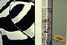
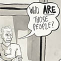

Back to the 1978 main index

Show me the artwork already
|
|
1978
(Ladies & Gentlemen, The Rolling Stones)
Artist's Statement
Music,
memory, family history, and the drawing and reading of comics
are ongoing themes in my work and form the core of this installation.
The piece, which takes the form of an oversized 6-panel comic
(approximately 25' in length), can be read on several levels,
echoing the different levels of detail revealed as the viewer
approaches.
From across the room, the viewer can read the banner type which
runs across all six panels: "A story from 1978, when rock
& roll on television was something you could only see very
late at night." On closer inspection one can read the text
within the panels and experience the piece as a traditional left-to-right
narrative which uses the graphical conventions of comic strip
art. Further close viewing reveals a blizzard of small drawings,
collages, and ephemera stapled and thumbtacked to the free-hanging
wooden panel frames and the wall behind. This "brain dump"
level of the exhibit suggests the undercurrent of dreams, random
thoughts, and quickly jotted notes which form the psychic background
noise of the artistic process.
The viewer's physical approach to the piece becomes a process
of zooming in: from the overall historical view, to the personal
story, to the obscure and bizarre realm of the brain's back alleyways.
The piece is at once a retelling of a classic rock & roll
moment and a celebration of the act of drawing as a link between
past and present. Here, drawing is the fundamental material not
only of comic strip narrative, but of real-life history.
|